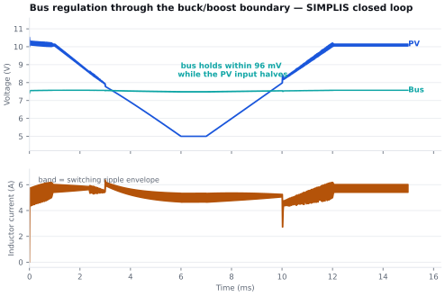
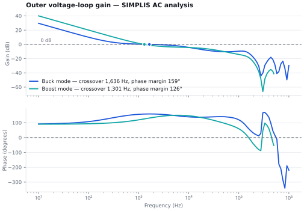
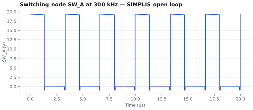
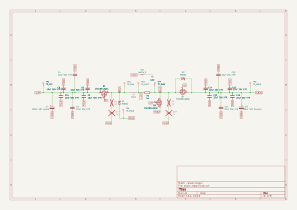
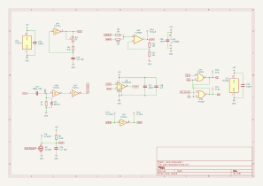

Power Electronics · PCB Design · Analog Control
Satellite Solar Array Power Converter
A 30 W four-switch buck-boost converter that takes a spacecraft solar array anywhere in a 6–24 V window and holds a 7.4 V battery bus — the power stage an MPPT-regulated array needs. The control loop is closed entirely in analog hardware, with no firmware in the path.

Overview
What it is, and where it stands.
Intent
The converter an MPPT array needs.
A spacecraft solar array does not behave like a battery. Its output voltage shifts with illumination angle, temperature, and radiation damage over the mission, and at any moment there is one operating voltage at which it delivers the most power. Sitting anywhere else wastes array area that was expensive to launch.
Tracking that point takes two separate things. The first is a supervisory algorithm that decides where on the array’s curve to operate. The second is a converter that can actually hold the array at that voltage while still producing a usable bus — across the whole range the array might wander into.
This project is the second of those two. The board accepts a commanded PV operating voltage and regulates the array to it, drawing whatever current that demands, while keeping the battery bus stable. An MPPT algorithm would sit on top and move that command; the hardware hook is already there, as a two-pin header that lets a microcontroller DAC override the on-board set-point trimmer.
Achieved so far
- Topology and architecture selected against the array’s operating window, with the requirement figures traced to clauses in ECSS-E-ST-20-20C, the CubeSat Design Specification Rev 14.1, and NASA’s small-spacecraft power benchmarks.
- Control loop designed and verified in SIMPLIS — peak-current-mode inner loop, PI outer loop, and mode comparator, checked for stability in both buck and boost.
- Worst-case analysis completed, which caught a current-sense gain error that would have capped the converter below its 30 W rating. Corrected before layout.
- Eight-sheet schematic captured and the board fully routed in KiCad — 132 components, four layers, no unconnected pads and no shorts.
- Not yet done: fabrication, assembly, and bench verification. Every waveform on this page is simulation output, not measured hardware.
Design and simulation
The loop, built and proven in SIMPLIS.
The regulator is built from comparators, op amps, and logic gates — nothing in the feedback path depends on software running correctly. It was designed and verified as a SIMPLIS model first, then every gain was rescaled for a single 5 V rail before it became a schematic.
Inner current loop
A 300 kHz oscillator sets an SR latch each cycle. A comparator resets it when the summed inductor current and compensation ramp exceed the current reference. Slope compensation is a 0.625 V ramp per period, equal to 0.375 A/µs referred to the inductor.
Outer voltage loop
A PI amplifier compares the divided array voltage against the set-point and produces the current reference, with a proportional gain of 8.2 and a zero at 285 Hz. Its output is clamped, so the reference can never command more current than the stage is rated for.
Mode selection
A difference amplifier measures array minus bus voltage and drives a comparator with hysteresis. Its output picks buck or boost and gates the switch drive logic, so the converter commits to one mode rather than chattering at the boundary.
Why four switches
The array’s 6–24 V window straddles the 7.4 V bus. Below 7.4 V the converter has to step up; above it, down. A buck alone cannot reach the bus from 6 V and a boost alone cannot come down from 24 V, so neither single topology covers the range. A four-switch buck-boost solves it with one inductor and one control loop, switching only the pair of devices the current mode requires and holding the other leg static.
One consequence of that choice drove a part selection. In each mode a high-side switch must be held on continuously, and a conventional bootstrap driver cannot do it — it recharges its high-side supply only while the switching node is pulled low, which at 100 % duty never happens. On the boost-side switch it is worse: in buck mode that node never goes low at all, so the bootstrap cannot refresh even once. Both high-side devices therefore use charge-pump drivers that sustain 100 % duty indefinitely.
A second detail worth naming: the sign of this loop is inverted relative to an ordinary supply. On a normal output-voltage regulator a rising output means back off. Here the loop regulates the input, so a rising array voltage means the converter is drawing too little current and must draw more.
Simulation results
The figures below are plotted directly from the SIMPLIS output files rather than captured from the simulator window.




Worst case, not nominal
The current limit on this converter is not a single number. Because slope compensation adds a ramp that grows across each switching cycle, the current at which the comparator trips falls as duty cycle rises. The limit is an envelope, and it has to be checked at every operating corner.
Working that envelope out exposed a part-selection error. The schematic had been drawn with a current-sense amplifier of twice the intended gain, which halves the envelope to roughly 2.6–3.2 A — below the 5.19 A peak inductor current at the deep-boost corner. The converter would have gone into current limit before reaching its 30 W rating, and on the bench it would have looked like a mysterious power ceiling rather than an obvious fault. With the correct amplifier the envelope is 5.2–6.5 A, giving 20 %, 27 %, and 24 % margin at the three operating corners.
Schematic and PCB layout
Eight sheets onto four layers in KiCad.
132 components, 1,231 track segments, 210 vias, and about 3.1 metres of copper on a 95 × 70 mm board. Fully routed, with no unconnected pads and no shorts.


Splitting the grounds
The most consequential decision in the layout was not a routing choice but a grounding one. The switching return and the analog return are separate copper planes, joined at exactly one point on the board.
The power stage slams several amps on and off at 300 kHz. If that return current shares copper with the millivolt signals the error amplifier and current-sense amplifier work with, the voltage developed across the shared impedance is injected straight into the feedback path. Keeping the planes separate means the switching return never flows through the analog reference; tying them at a single star point means the two still share a potential without forming a loop.

Several rules follow from that split, and they constrained the routing more than any clearance rule did:
- No signal may cross the boundary between the two reference regions. A trace that crosses it has no continuous return path beneath it, and the return current is forced into a detour that becomes a loop antenna.
- The switching nodes get no copper pour and stay off the inner layers entirely. They are the aggressors — the goal is to keep their area small, not to give them more copper.
- Power nets carry a 2.0 mm minimum width as a rule-violation trap rather than a routing target. Real capacity comes from shaped copper following the commutation loop; the minimum exists so an accidental neck-down gets flagged.
- Control-loop components sit 33–46 mm from the switching-node copper, except the three that physically must sit at the current-sense shunt.
Built to be measured
27 test points, grouped by function into power, gate, sense, and logic clusters so a probe can walk the signal chain without hunting. The current-sense shunt has Kelvin pads. A resistor in the feedback path, with a header across it, lets a network analyser inject a disturbance and measure loop gain on the bench at the same point the simulation measured it.
One measurement caveat came out of checking the layout against how the board would actually be probed. The gate test points sit in a tidy row about 19 mm from the transistor gates they monitor. That stub is roughly 15–20 nH, and against the gate capacitance of those devices it rings near 29 MHz — inside the spectrum of a real gate edge. The test point would show a ringing artifact the gate itself does not have. It is recorded as a known limitation for this revision rather than left to mislead whoever probes it.
Documentation
Schematic.
All eight sheets: power stage, gate drive, current sense, PWM modulator, error amplifier, mode logic, and housekeeping supplies.